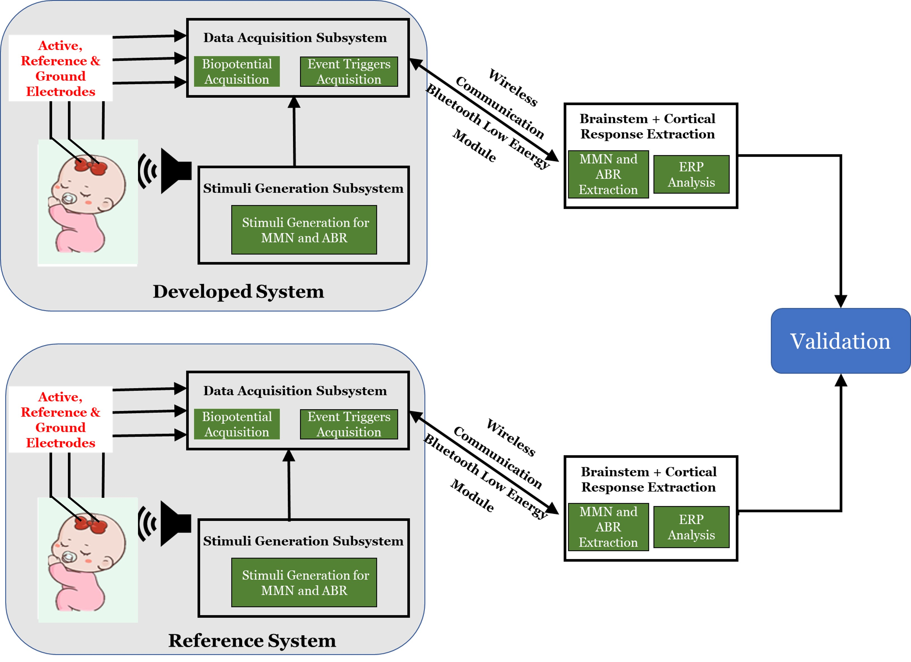
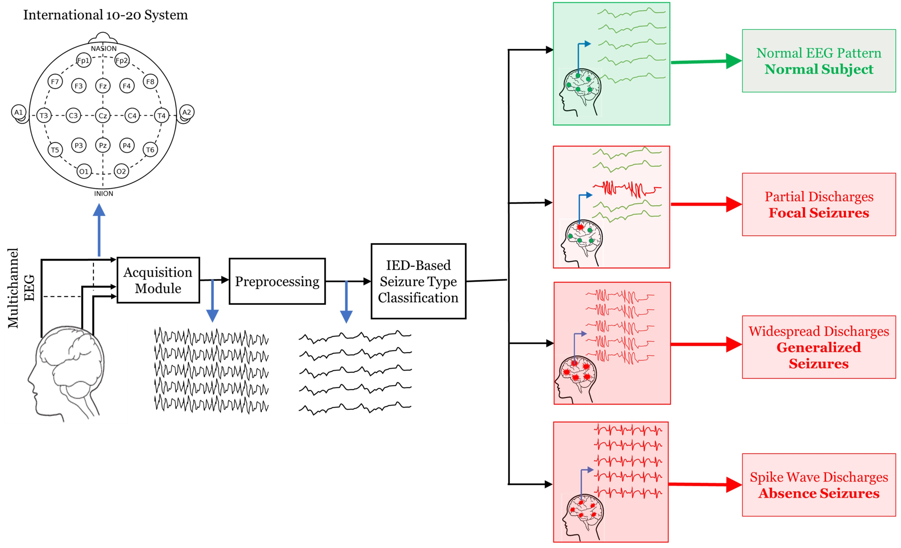
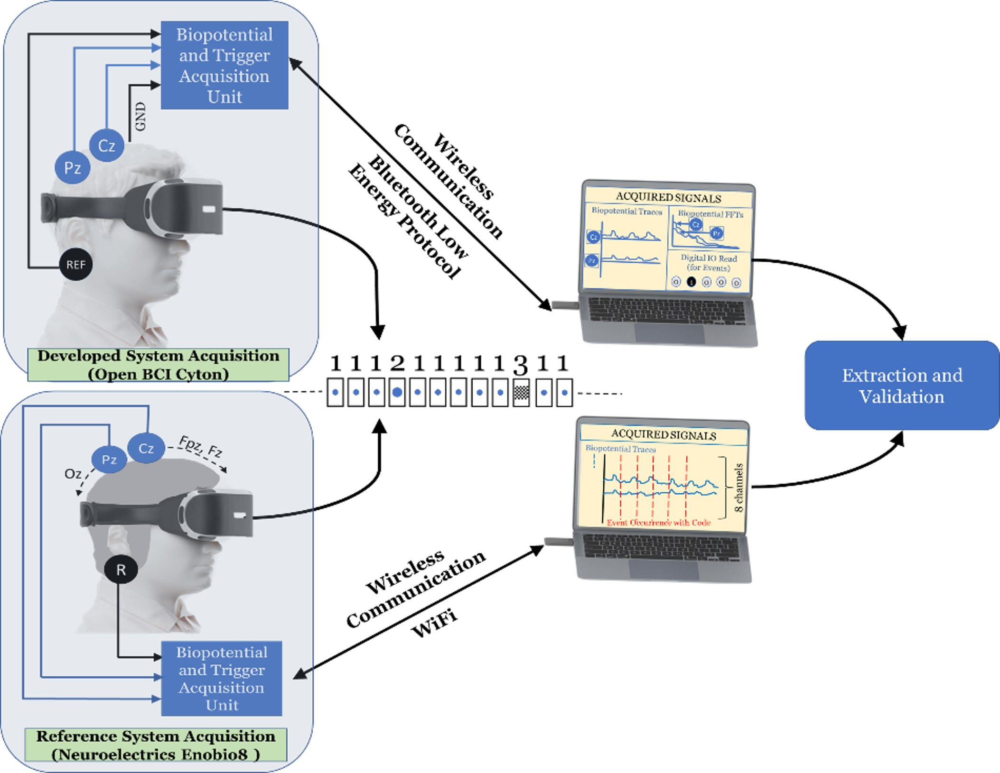
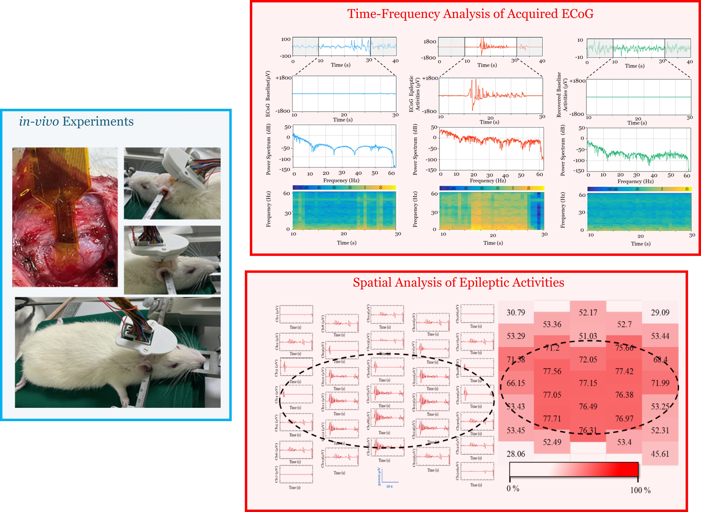
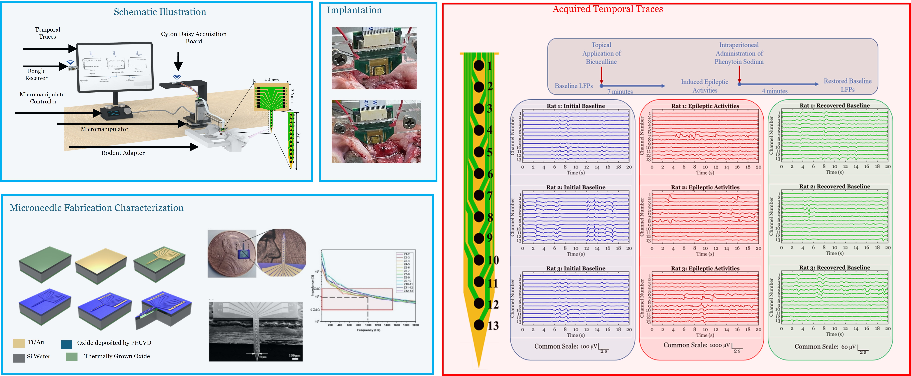

Education
| Qualification | Department/Specialization | Institution | Score | Duration |
|---|---|---|---|---|
| Doctor of Philosophy (Ph.D.) | Electronic Systems Engineering (DESE), Division of EECS | Indian Institute of Science (IISc), Bangalore | 7.9/10 | 2018-2024 |
| Thesis Title: Event-Related Potential Interpretation Approaches for Neonatal Hearing Screening | ||||
| Broader Area: Brain Computer Interfaces | Thesis Defense Date: 22 April 2024 | |||
| Master of Technology (M.Tech.) | VLSI and Embedded Systems | Dhirubhai Ambani Institute of Information and Communication Technology, Gandhinagar | 7.55/10 | 2013-2015 |
| Bachelor of Engineering (B.E.) | Electronics and Communication | Government Engineering College, Bhavnagar | 7.99/10 | 2008-2012 |
| Higher Secondary Education (12th Std) | Science Stream – Engineering Group | B. M. Commerce High School, Bhavnagar | 82.20% | 2008 |
| Secondary Education (10th Std) | - | B. M. Commerce High School, Bhavnagar | 90.14% | 2006 |
Work Experience
| Position | Duration | Workplace | Contribution |
|---|---|---|---|
| Post-Doctoral Research Associate | 1 Year 2 Months(January 2024 – Present) | BEES Lab DESE IISc | • Technology Transfer for Doctoral Research • Support for Neural Signal Processing for invasive rodent models • Mentoring researchers, including doctoral and master students |
| Teaching Assistant | 5 Years 8 Months(July 2019 – Present) | • Taught Brain-Computer Interfaces for nine online and three offline courses. • Conducted weekly assignments lab sessions • Managed Question Answer Forums • Conducted Live sessions | |
| System Engineer | 2 Years 4 Months(August 2015 – December 2017) | TCS, PuneClient: Ford Motor Company, Detroit | • Contributed towards embedded modular system design and relevant logic development and verification. • Supported model-based design using MATLAB. • Worked on car safety and a power optimization module. • Coordinated with the onsite testing team to update the existing logic. |
Research Projects
Design, Development and Validation of an Affordable, Portable Neonatal Hearing Screening System
Simplified Experimental Flow of the Auditory Brainstem Response (ABR) and Mismatch Negativity (MMN) Extraction.
Design and Validation of an Algorithm to Detect and Classify Epileptic Seizures
Simplified Illustration of the Developed Approach for Automated Interictal Epileptiform Discharges (IED) Pattern Extraction Based Epileptic Seizure Detection and Classification.
Design, Development, and Validation of a Wearable Headband for Single Event Extraction for attention and working memory assessment using Visually evoked P300 ERPs
Flow Diagram of the P300 ERP Extraction and Validation using the Developed System versus the Reference System.
Design and Development of Micor Electrode Arrays for Neural Signature Extraction from Rodents to Assess AED efficacy
Flexible MEA based rodent model to understand efficacy of anti epileptic drugs
Design and Development of Microneedle understanding epileptic activity distribution for rodent model
Microneedle based rodent model to understand epileptic seizure distribution
Skills
| Technical Skills | Proficiency |
|---|---|
| Brain-Computer Interfaces | ★★★★★ |
| Neurophysiological Signal Processing | ★★★★★ |
| EEG-ERP Experiments - Noninvasive BCI | ★★★★★ |
| Wearable EEG System Design | ★★★★☆ |
| Rodent Model Data Analysis - Invasive BCI | ★★★★☆ |
| Programming and Automation | ★★★★☆ |
| App & Web Development | ★★★☆☆ |
| Microfabrication | ★★★☆☆ |
| Image Processing | ★★★☆☆ |
| Machine Learning | ★★★☆☆ |
| Software/Tools | Proficiency |
|---|---|
| MATLAB | ★★★★★ |
| Neural Acquisition GUIs (Open BCI, NIC2, Neuroscan) | ★★★★★ |
| Origin | ★★★★☆ |
| VS Code | ★★★☆☆ |
| PyCharm | ★★★☆☆ |
| GitHub | ★★★☆☆ |
| Audacity | ★★★☆☆ |
| Time-Management | ★★★☆☆ |
| COMSOL | ★★★☆☆ |
| SolidWorks | ★★★☆☆ |
| Soft Skills | Proficiency |
|---|---|
| Research Writing | ★★★★★ |
| Research Methodology | ★★★★☆ |
| Communication Skills | ★★★★☆ |
| Presentation Skills | ★★★★☆ |
| Teaching | ★★★★☆ |
| Adaptability | ★★★★☆ |
| Teamwork | ★★★★☆ |
| Quick Learner | ★★★★☆ |
| Interpersonal Skills | ★★★★☆ |
| Critical Thinking | ★★★★☆ |
Research Publications
Peer-Reviewed Journal Articles
-
Spatiotemporal analysis of interictal EEG for automated seizure detection and classification.
Biomedical Signal Processing and Control 79 (2023): 104086. [Read Paper]
-
Automated ABR and MMN Extraction using Customized Headband for Hearing Screening.
Biomedical Signal Processing and Control 94 (2024): 106264. [Read Paper]
-
Design and fabrication of a microelectrode array for studying epileptiform discharges from rodents.
Biomedical Microdevices 25, no. 3 (2023): 31. [Read Paper]
-
A flexible implantable microelectrode array for recording electrocorticography signals from rodents.
Biomedical Microdevices 24, no. 4 (2022): 31. [Read Paper]
-
Electronic nose: A non-invasive technology for breath analysis of diabetes and lung cancer patients.
Journal of Breath Research 13, no. 2 (2019): 024001. [Read Paper]
Conferences/Symposiums Publications
- Design and Development of a Bimodal, Auditory Event-Related Potential Extractor System for Neonatal Hearing Screening. EECS Research Student Symposium, IISc, 2024. [Read Abstract]
-
Flexible Microelectrode Array for Chronic Electrocorticography Recording under Different Neurophysiological Conditions.
IEEE EMBS Conference on Neural Engineering (NER 2023). [Read Paper]
-
Design, Development, and Validation of a Portable Visual P300 Event-Related Potential Extraction System.
IEEE Biomedical Circuits and Systems Conference (BioCAS), 2022. [Read Paper]
-
Teaching Cognitive Neuroscience: Neuro-Instrumentation, an Indian Perspective.
Society for Neuroscience (SfN, 2022). [Read Abstract]
-
Dynamic Variations in P300 Attention and Working Memory Components in Males and Females, in an Indian Cohort.
Society for Neuroscience (SfN, 2022). [Read Abstract]
-
Design and Development of a Headband for Cortical Response Extraction
EECS Research Student Symposium, IISc, 2021 [Read Abstract]
-
Design and optimization of single electron transistor based 4-bit arithmetic and logic unit at room temperature operation.
IEEE International Symposium on Nanoelectronic and Information Systems (iNIS), 2017 [Read Paper]
Patents
| Patent Title | Current Status | Inventors |
|---|---|---|
| A Novel Headband For Sensory Pathway Scanning | Granted (Filed: June 09, 2023) (Granted: April 05, 2024) | Hardik J. Pandya, Rathin K. Joshi , Ajay Krishnan A., Hari R S. |
| Epilepsy Seizure Classification | Granted (Filed: August 10, 2023) (Granted: January 17, 2025) | Hardik J. Pandya, Rathin K. Joshi , Varun Kumar M., Megha Agarwal, Latika Mohan, Mahesh Jayachandra |
| L-shaped Surface Neural Implant (SNI) for Brain Stimulation | Application Filed (April 03, 2024) | Sreenivas Bhaskara, Saravanan M, Rathin K. Joshi , Hardik J. Pandya, Shabari Girishan K. V., Nitu Bhaskar |
| A Neonatal Headgear for an Interface with a Biological Subject | Application Filed (January 29, 2025) | Hardik J. Pandya, Rathin K. Joshi , Ajay Krishnan A., Hari R S. |
Demonstrations
Event-Related Potential Extraction System Development and Applications.
Event Type: Brain, Computation, and Learning (BCL-2023) Workshop
Date: January 09-13, 2023
Venue: Faculty Hall, Indian Institute of Science, Bangalore.
Single Event P300 Extractor
Event Type: Project Completion Demonstration
Date: June 08,09, 2022
Venue: Defence Institute of Physiology & Allied Sciences (DIPAS), DRDO, Delhi
Awards and Recognitions
SHIFT Health Hackathon Winners (Nov-2022)
SHIFT is the Siemens Healthineers Innovation Ecosystem which aims to address unmet healthcare challenges. ... Sixteen of the 2051 registered teams were invited to a 24-hour, in-person Hackathon. Following two rounds of presentations, five teams were shortlisted to present to a grand jury, and three teams were declared winners.The research work is towards robust, rapid and reliable system for Neonatal Hearing Screening System.
SmartX Health Hackathon Runners Up (Aug-2022)
SmartX for Health Hackathon, a Siemens Research and Innovation Ecosystem Initiative. ... It was conducted at the Centre for Product Design and Manufacturing (CPDM), Indian Institute of Science (IISc), Bangalore. The key objective was to foster curiosity and technical vigor amongst participants at IISc for developing technology solutions pertaining to health, safety and sustainability in the MSME & healthcare industries.
SITARE-GYTI appreciation award (Oct-2021)
The SITARE scheme aims to support innovative student projects in biotechnology ... , promoting translational research to develop products and technologies addressing unmet needs.
Additional Achievements
Secured a Score of 709/1000 (AIR 1667 - 99.35%tile) in GATE 2013 – National Level Postgraduation Entrance Exam.
Currently at 313th rank out of 158264 active members of MATLAB Cody – an online platform to solve coding problems
Represented my college in several intercollegiate chess competitions during my undergrad and post-grad studies.
Secured All India Rank - 40 in CSIR JRF NET (Engineering Science) 2012 – National Level Exam to assess technical knowledge and aptitude..
Teaching Assistantship
TA Details for Selected Offline Courses
| Course | Topic/Links | Audience | Mode | Instructor |
|---|---|---|---|---|
| Introductory Neuroscience & Neuro-Instrumentation |
|
Grad, Post-grad and Doctoral students | online | Dr. Mahesh Jayachandra & Dr. Hardik J. Pandya |
| Neural Science for Engineers |
|
Dr. Vikas V & Dr. Hardik J. Pandya | ||
| Advanced Neural Science for Engineers Instrumentation |
|
Dr. Vikas V & Dr. Hardik J. Pandya | ||
| Mathematical Aspects of Biomedical Electronic System Design Instrumentation |
|
Prof. Chandramani Singh & Dr. Hardik J. Pandya | ||
| Process Technology and System Engineering for Advanced Microsensors and Devices | Basics of Lithography, Optics in Lithography, Resolution, Depth of Focus and Resolution Enhancement Techniques, Laboratory demonstration on basics of Biopotential Acquisition, and ERP Experimentation. | Offline | Dr. Hardik J. Pandya | |
| Design for Analog Circuits | Basic Properties of OpAmp, Arithmetic Circuits with Op Amp, ADC, DAC, Clippers, and Clampers. | Grad students | Dr. Rutu Parekh | |
| Engineering Mathematics | Linear Algebra, Doubt-Solving Sessions | Grad students | Dr. Sunitha V. |